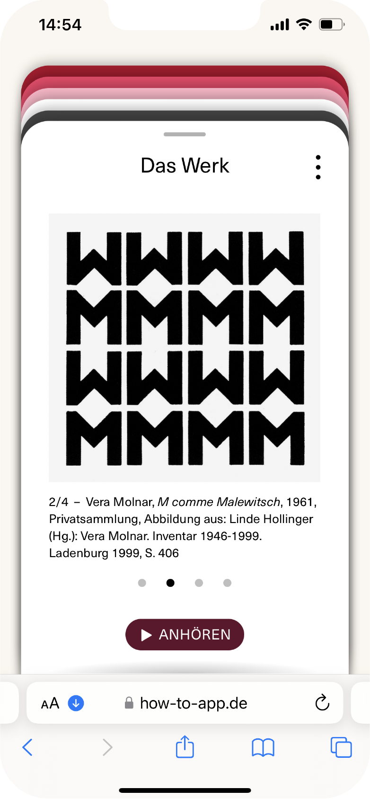
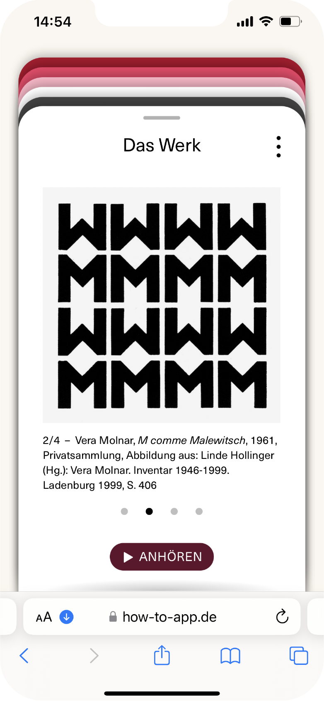
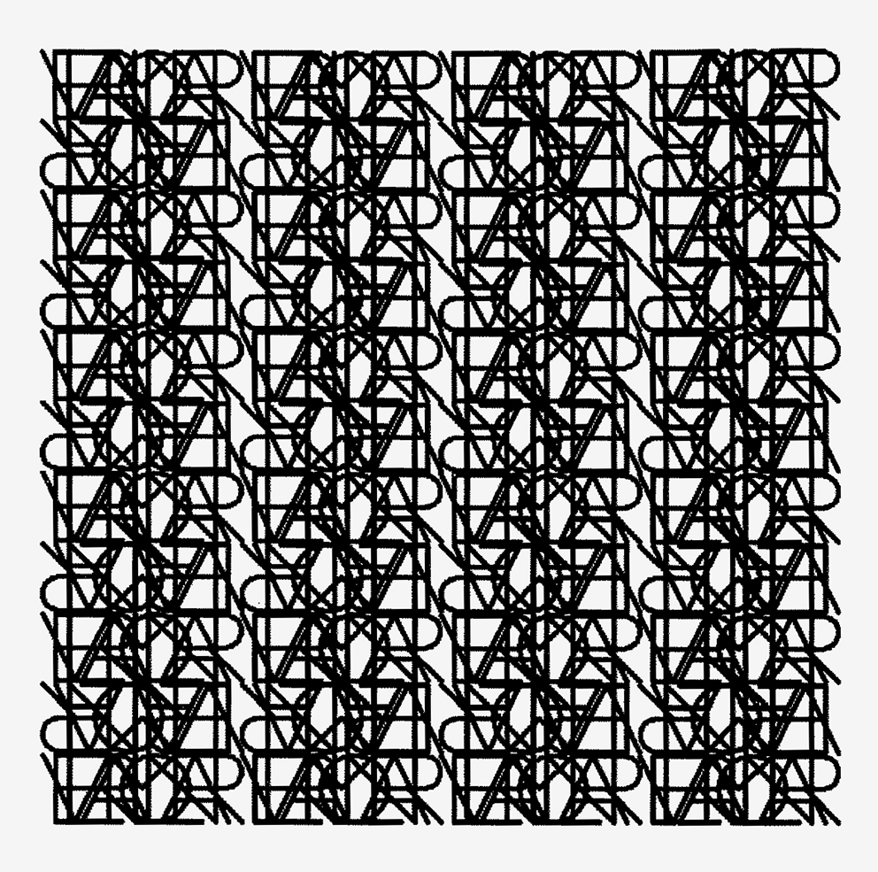

buchstabe
 

Das Spiel Buchstaben spielt mit dem, was in einem Bild lesbar ist. Welche Bilder, Deutungen, Bezüge und Formen lassen sich aus Schriftzeichen konstruieren? Wo ist die Schwelle zur Unlesbarkeit? Und was sagen uns die Formen? Ist es nicht letztlich die Form selbst, die im Bild spricht?
werk
»Entschlüsseln, verstehen, meinen Ansatz mit Worten oder Malerei wiedergeben, das ist für mich dasselbe. (...) Ich versuche, die Bestandteile meiner Gemälde und Zeichnungen aufzuzählen und à jour zu halten. Selbstverständlich sind alle Elemente, die ich verwende, nicht erfunden, sondern nur geliehen und manipuliert.«
In diesem Fall bedient sich Vera Molnar der Sprache und leiht sich Buchstaben aus, um daraus Bilder zu konstruieren. Diese Bausteine hat sie nicht selbst erfunden und auch andere Künstler*innen arbeiten damit zum Teil im Grenzbereich zwischen Bildender Kunst und Poesie.
Die Buchstaben sind die kleinsten Einheiten unserer Sprache. Setzen wir diese systematisch zusammen, können daraus Worte, Zusammenhänge, sogar ganze Welten entstehen, die sich jenen erschließen, die das System verstehen. Wer den Code kennt, d.h. wer die Zeichen entziffern kann, erkennt auch den Inhalt. Damit spielt Vera Molnar, wenn sie Buchstaben verwendet. Es geht ihr nicht vordergründig darum, sprachliche Inhalte zu transportieren, sie sucht vielmehr nach bildlichen Übersetzungen in Zeichen und Chiffren. Sie interessiert sich für die formalen Qualitäten der Buchstaben, für die Zusammenhänge von Linien, Formen und Farben. Ihre Denkweise lässt sich vielleicht am besten mit der Sprache der Mathematik vergleichen, durch die sich Inhalte und Zusammenhänge in Zahlen und Formeln übersetzen lassen.
Wenn sie z.B. den Buchstaben M verwendet, spielt sie damit auf Kasimir Malewitsch, den russischen konstruktivistischen Künstler an, der die gegenstandslose Malerei begründet hat. M ist aber auch der erste Buchstabe ihres Namens. In anderen Arbeiten verwendet sie Initialen, Buchstaben oder ihren gesamten Namen und füllt damit ganze Bilder. Dabei ist Vera Molnar fasziniert von der Form von Buchstaben und Schriften und lotet aus, wie weit sie sich verändern lassen. Sie lässt beispielsweise die Linienstärke der Zeichen anschwellen, sodass Zwischenräume schrumpfen oder verschwinden und neue Formgebilde, Muster oder Strukturen entstehen. Vordergrund und Hintergrund sind dabei nicht immer klar auszumachen. Auch Rotationen, Spiegelungen oder das Ineinanderschieben von Zeichen kann zu einer Verfremdung bis hin zur Unentzifferbarkeit führen. Es entstehen Übergänge, Zeichen werden zu Mustern, neue Formen und Strukturen entstehen, die nicht gelesen werden können, sondern allein als Bild existieren. Hier geht es nicht mehr um das Entziffern einzelner Buchstaben, um das Lesen von Sprache, sondern um das visuelle Ereignis. Aus Buchstaben schafft Vera Molnar ein Schriftbild, dessen Linien, Strukturen oder Muster nicht in sprachliche Inhalte übersetzt werden. Die Form selbst bildet die Aussage und doch bleibt das Zeichen selbst immer auch ein Verweis auf das, was im Bild spricht.
In diesem Fall bedient sich Vera Molnar der Sprache und leiht sich Buchstaben aus, um daraus Bilder zu konstruieren. Diese Bausteine hat sie nicht selbst erfunden und auch andere Künstler*innen arbeiten damit zum Teil im Grenzbereich zwischen Bildender Kunst und Poesie.
Die Buchstaben sind die kleinsten Einheiten unserer Sprache. Setzen wir diese systematisch zusammen, können daraus Worte, Zusammenhänge, sogar ganze Welten entstehen, die sich jenen erschließen, die das System verstehen. Wer den Code kennt, d.h. wer die Zeichen entziffern kann, erkennt auch den Inhalt. Damit spielt Vera Molnar, wenn sie Buchstaben verwendet. Es geht ihr nicht vordergründig darum, sprachliche Inhalte zu transportieren, sie sucht vielmehr nach bildlichen Übersetzungen in Zeichen und Chiffren. Sie interessiert sich für die formalen Qualitäten der Buchstaben, für die Zusammenhänge von Linien, Formen und Farben. Ihre Denkweise lässt sich vielleicht am besten mit der Sprache der Mathematik vergleichen, durch die sich Inhalte und Zusammenhänge in Zahlen und Formeln übersetzen lassen.
Wenn sie z.B. den Buchstaben M verwendet, spielt sie damit auf Kasimir Malewitsch, den russischen konstruktivistischen Künstler an, der die gegenstandslose Malerei begründet hat. M ist aber auch der erste Buchstabe ihres Namens. In anderen Arbeiten verwendet sie Initialen, Buchstaben oder ihren gesamten Namen und füllt damit ganze Bilder. Dabei ist Vera Molnar fasziniert von der Form von Buchstaben und Schriften und lotet aus, wie weit sie sich verändern lassen. Sie lässt beispielsweise die Linienstärke der Zeichen anschwellen, sodass Zwischenräume schrumpfen oder verschwinden und neue Formgebilde, Muster oder Strukturen entstehen. Vordergrund und Hintergrund sind dabei nicht immer klar auszumachen. Auch Rotationen, Spiegelungen oder das Ineinanderschieben von Zeichen kann zu einer Verfremdung bis hin zur Unentzifferbarkeit führen. Es entstehen Übergänge, Zeichen werden zu Mustern, neue Formen und Strukturen entstehen, die nicht gelesen werden können, sondern allein als Bild existieren. Hier geht es nicht mehr um das Entziffern einzelner Buchstaben, um das Lesen von Sprache, sondern um das visuelle Ereignis. Aus Buchstaben schafft Vera Molnar ein Schriftbild, dessen Linien, Strukturen oder Muster nicht in sprachliche Inhalte übersetzt werden. Die Form selbst bildet die Aussage und doch bleibt das Zeichen selbst immer auch ein Verweis auf das, was im Bild spricht.
VERWENDETE UND ZITIERTE LITERATUR
Vera Molnar: Inventaire. Le Hôme-sur-Mer, été 1994, Quelle
Linde Hollinger (Hg.): Vera Molnar. Inventar 1946-1999. Ladenburg 19992

Vera Molnar, Du visible au lisible, 2007, Chinesische Tinte, Papier, 29,7 × 29,7 cm, Edition Axel Rohlfs. Abbildung aus: Vera Molnar. Ausstellungskatalog Art Gallery Paks. Hg. von Open Structures Art Society, Budapest 2008, S. 69